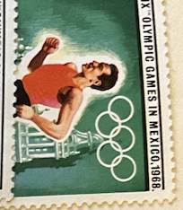
| SOURCE | TITLE| IMAGE MATCH | click to source page |
| eBay | MEXICO 1984 SUMMER OLYMPICS + S/S MNH SPORTS, GYMNASTICS | eBay | 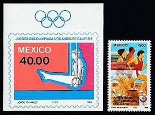 |
| eBay | Bolivia Block 92/93 Mint / Olympiad 1/2853 | eBay | 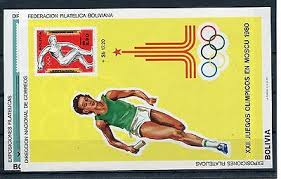 |
| Dreamstime.com | Sport on postage stamps editorial stock image. Image of collection - 146718369 | 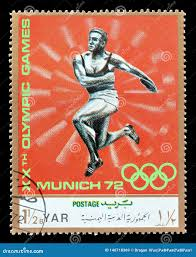 |
| eBay | Magyar Posta Stamp | eBay | 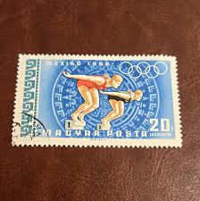 |
| Mercari | Vintage Olympic Stamp ( na3#3 )# 5 | Mercari | 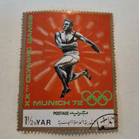 |
| Olympic Games 1 (1968) - Ajman - LastDodo | 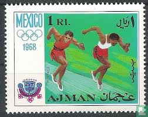 | |
| lastdodo.com | Joana Bielschowsky Stamp catalogue - LastDodo | 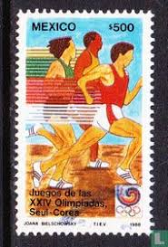 |
| Shutterstock | Stamp Yemen: Over 1,542 Royalty-Free Licensable Stock Photos | Shutterstock | 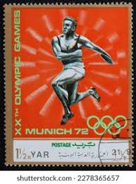 |
| Beautiful Vintage Olympics Commemorative Stamp Art @ Vintage Fangirl | 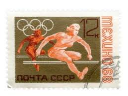 | |
| justsomestamps.com | Just Some Stamps | 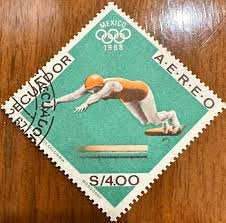 |
| eBay UK | Olympics Single Sports Postal Stamps for sale | eBay UK | 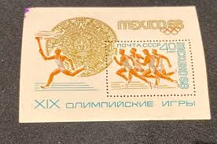 |
| HipStamp | Hungary, 1968, Olympic Games, Mexico City, 20f, used | Europe - Hungary, Stamp / HipStamp | 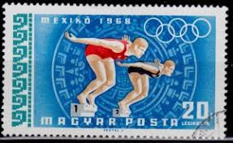 |
| ecuadorstamps.com | 1968 Olimpiadas de Mexico - Ecuador Stamps | 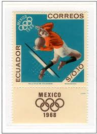 |
| Stamp Community Forum | The Stamps Of Chad (Tchad). - Stamp Community Forum | 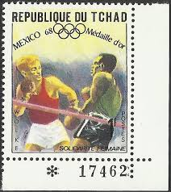 |
| Diego Guarino (dguarino12) – Profile | Pinterest | 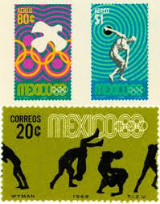 | |
| eBay | Paraguay Used Sports Postal Stamps for sale | eBay | 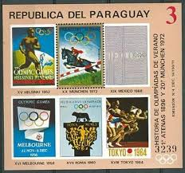 |
| lastdodo.fr | Jeux Olympiques 1½ (1971) - Yémen [1962-1990] - République Arabe - LastDodo | 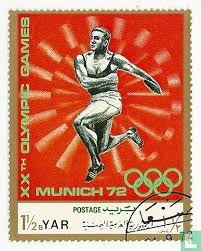 |
| eBay | Olympics Used Latin American Stamps for sale | eBay | 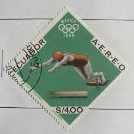 |
| eBay | HUNGARY OLD STAMPS 1968 Minisheet - Olympic Games - Mexico City - USED/CTO | eBay | 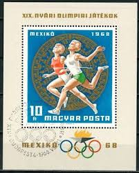 |
| Free stamp catalogue | Stamps from Russia, Soviet Union - Freestampcatalogue.com - The free online stampcatalogue with over 500.000 stamps listed. | 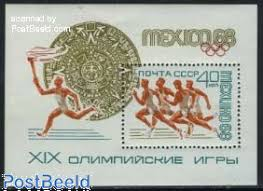 |
| eBay UK | 1968 Mexico Olympics,Olympic Torch,runners,Aztec Calendar stone,Russia,Bl.51,MNH | eBay UK | 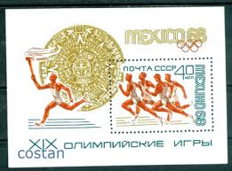 |
| Etsy | Vintage Postage Stamp - Olympic Games Mexico City '68 (1968) - Etsy | 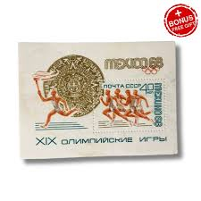 |
| GetArchive | 21 Stamps of romania 1968 Images: PICRYL - Public Domain Media Search Engine Public Domain Search | 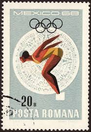 |
| Wikimedia.org | File:LAOS 1968 MiNr0244 pm B003.png - Wikimedia Commons | 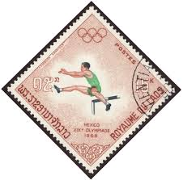 |
| Russian Philately | Olympic Games Topical Stamps and Covers - Russian Philately - Russian Stamps | 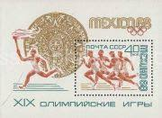 |
| Shutterstock | 3+ Thousand Olympic Discipline Royalty-Free Images, Stock Photos & Pictures | Shutterstock | 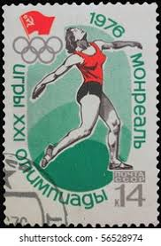 |
| PICRYL | Stamp 1965 Mexico MiNr1196 pm B002 - PICRYL - Public Domain Media Search Engine Public Domain Search | 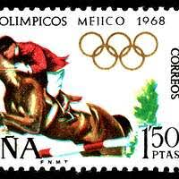 |
| Todocolección | rumania, posta rumana - v/f 75 bani - año 1964 - Buy Antique stamps of Romania on todocoleccion | 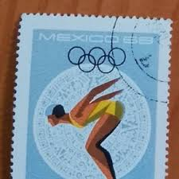 |
| Federal University of Agriculture, Abeokuta (FUNAAB) | OLYMPIC STAMPS MEXICO 1968 OLYMPICS | 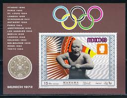 |
| Shutterstock | Karnal Haryana India -august 7th 2025-closeup Stock Photo 2673884429 | Shutterstock | 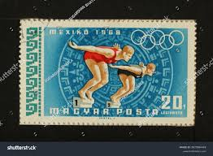 |
| Free stamp catalogue | Stamps with the theme Boxing - Freestampcatalogue.com - The free online stampcatalogue with over 500.000 stamps listed. | 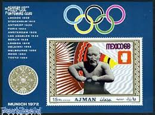 |
| eBay | FRENCH POLYNESIA C49 MINT NH, OLYMPICS | eBay | 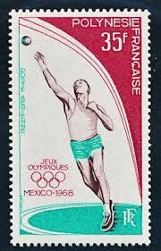 |
| eBay | TOGO 1968 661-66 A-B Block 35 650-53 C95-96 Olympics Olympia Mexico Sport MNH | eBay | 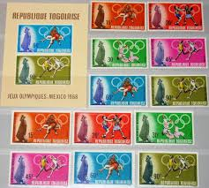 |
| eBay | Lot of 5! Vintage Stamps! Fujeira~ Olympics ~Whistler's Mother~ Cairo 1966~ LOOK | eBay | 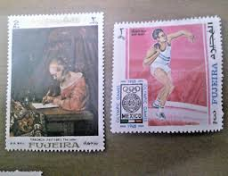 |
| Etsy | 289 Old Vintage STAMPS PARAGUAY Trains , Horses , Racing , Olympics, Artwork Etc..... - Etsy | 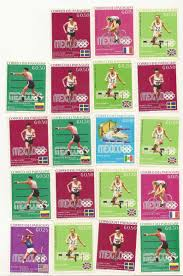 |
| eBay | Cancelled to Order/CTO Nicaraguan Olympics Stamps for sale | eBay | 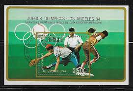 |
| eBay | TOGO 1968 OLYMPICS, XF Imperf+Perf MNH** Set + Sheet, Jeux-Olympiques Sports | eBay | 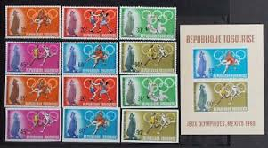 |
| eBay | O) 1988 MEXICO, PRINTING PLATE, 1988 SUMMER OLYMPIC SEOUL, ATHLETES, PEDESTRIAN | eBay | 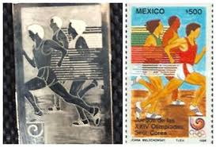 |
| HipStamp | MEXICO C342, $2Pesos 1968 Olympics, Mexico City. MNINT, NH. VF. | Central & South America - Mexico, Air Mail Stamp / HipStamp | 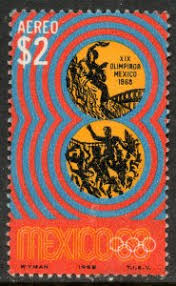 |
| eBay | RUSSIA 1968 Olympics MEXICO S/S & complete set MNH (267) | eBay | 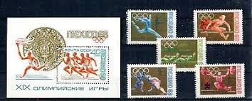 |
| eBay | Olympics Caymanian Stamps for sale | eBay | 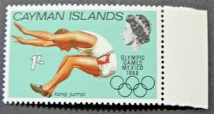 |
| eBay | Russia USSR stamp 1968 SC3497 Summer Olympic Mexico Souvenir Sheet MNH bp54 | eBay | 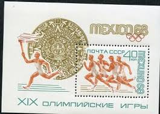 |
| Alamy | MAHRA STATE - CIRCA 1967: a stamp printed in Mahra Sultanate shows discus-throwing, Summer Olympics 1968, Mexico City, circa 1967 Stock Photo - Alamy | 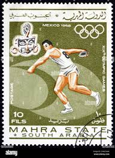 |
| Todocolección | 1987: día mundial del correo - ignacy francisze - Acheter Timbres anciens de Pologne sur todocoleccion | 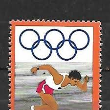 |
| Alamy | 19 or 20 10 1968 hi-res stock photography and images - Alamy | 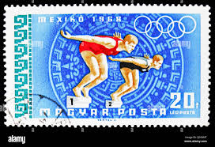 |
| eBay | Hungary, Scott C277--Women Swimmers-Aztec Calendar Stone--Olympics--1968--used | eBay | 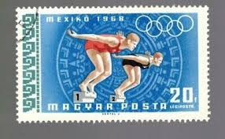 |
| eBay | Yemen 1968 - Olympic Games Mexico - Used Souvenir Sheet | eBay | 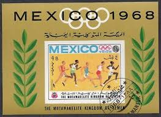 |
| eBay | Mexico stamp 1351-1357 MH | eBay | 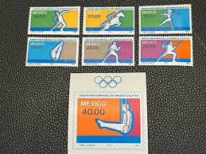 |
| eBay | RUSSIA,USSR:1968 SC#3497 S/S MNH 19th Olympic Games, Mexico City AS579 | eBay | 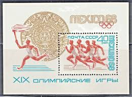 |
| eBay | Lot Hungarian Sport Stamps,19 Souvenir Stamps & 2 Letters Olympics and World Cup | eBay | |
| eBay | Stamp, 1966, 2nd Winter Olympic Games, Soviet Union | eBay | |
| Jay Smith & Associates | Jay Smith & Associates: World: Middle East: Ajman Stamps | |
| Shutterstock | Stamp Vintage Mexico: Over 2,308 Royalty-Free Licensable Stock Photos | Shutterstock | |
| GetArchive | 47 1968 stamps of indonesia Images: PICRYL - Public Domain Media Search Engine Public Domain Search | |
| eBay | Olympics Romanian Stamps for sale | Shop with Afterpay | eBay Australia | |
| stampsonstamps.org | Yemen | |
| eBay | 015 - Fujeira - Olympic Games - Mexico 1968 - MNH S/S Imperforated | eBay | |
| eBay | Liberia - 1968 Olympic Games - Mexico City, Mexico | eBay | |
| Fandom | Ajman 1968 Olympic Games - Mexico | JPP-Stamps Wiki | Fandom |
{kind=link}